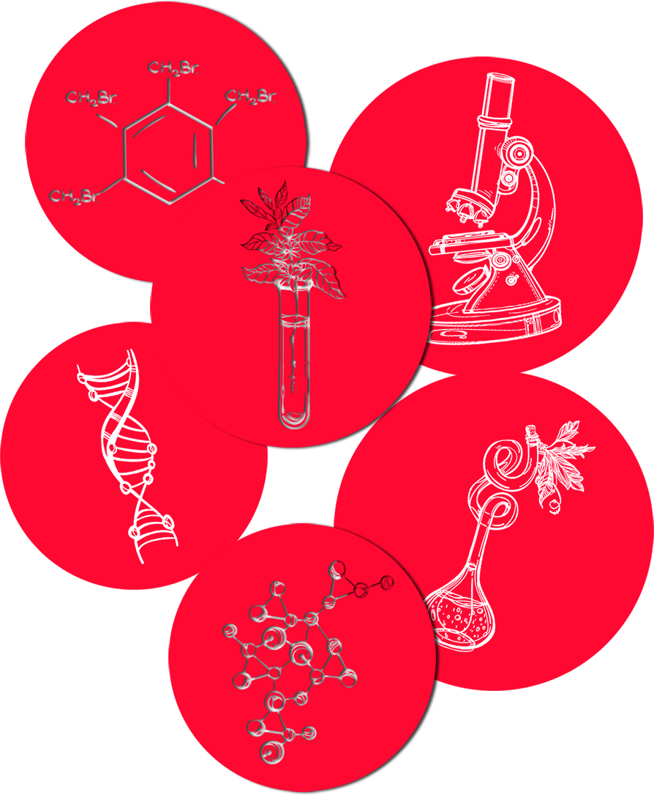
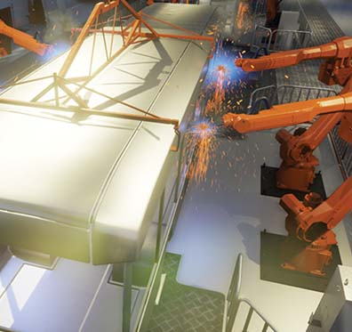
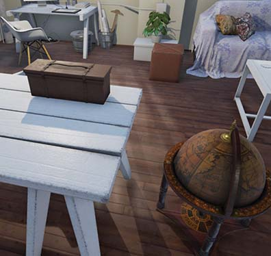
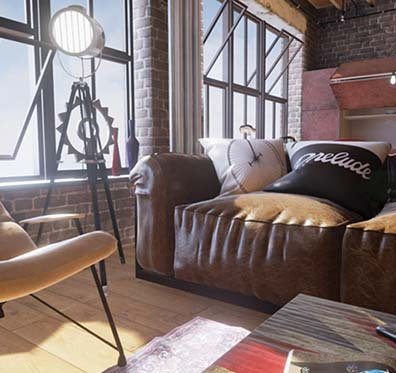
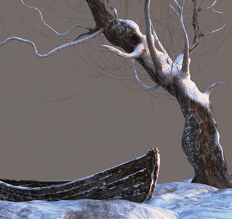
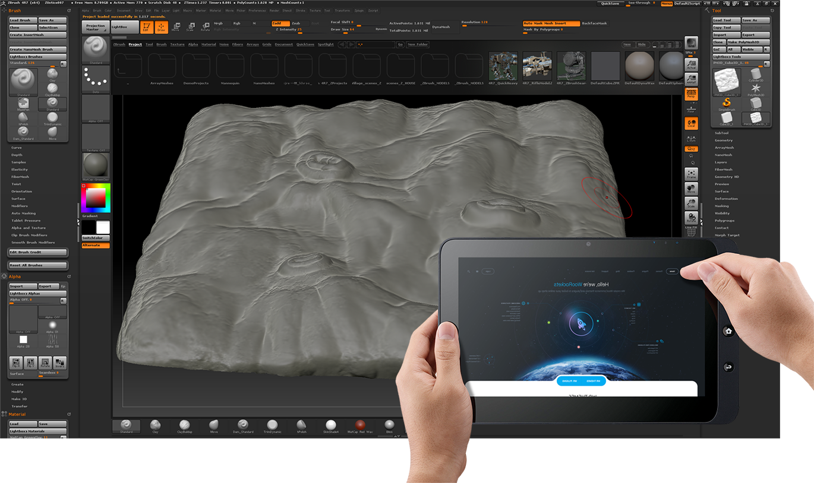
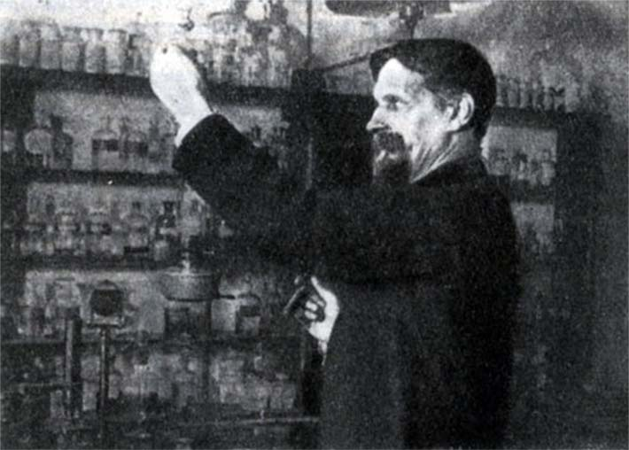
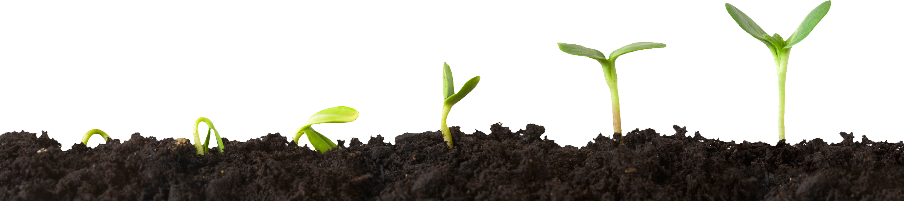

образовательный проект
подсолнух
разработка виртуально-образовательного портала:
На примере процесса фотосинтеза в растительном организме

цель:
разработка образовательного контента, позволяющего более эффективно преподносить учебную информацию в современной информационно-графической форме
задачи:
1. Разработать методику создания образовательного контента нового поколения, описать структурные единицы, требования к содержательной и графической частям, что позволит школьникам проходить PSI тест на отличном уровне и повысит статус Российского образования!;
2. Создать веб платформу (портал), позволяющую размещать виртуально-графический контент в интерактивной форме с подробными описаниями, привлекать специалистов к комментированию и обратной связи, осуществлять КОЛЛЕКТИВНУЮ деятельность разработчиков , ученых-педагогов, ШКОЛЬНИКОВ И СТУДЕНТОВ с использованием технологии GIT;
3. Разработать методику проведения олимпиад и работы кружков, позволяющую проводить как соревнования между учащимися школ одного города, так и учащимися, представляющими различные города РФ;
4. Разработать учебные текстовые и видео пособия, позволяющие в сжатые сроки производить обучение будущих разработчиков 3д технологиям и основам программирования;
5. Создать мобильное приложение, позволяющее в удобной форме демонстрировать образовательный контент на мобильных устройствах;
6. Создать библиотеку 3д элементов, текстур и видеоматериалов по каждой дисциплине, позволяющую в сжатые сроки создавать учебные интерактивные 3д иллюстрации;
7. Разработать приложение, позволяющее комфортно работать с библиотекой и создавать иллюстрации имея только базовые знания в области компьютерной графики;
8. Создать методику внедрения игровых технологий в образовательный процесс. Разработать игровую платформу для проведения мероприятий (создание собственного поселения на Марсе...и тд, подробно иллюстрирую в PSD презентации);
9. Формирование Национальной базы учебного контента в современной графической форме;
средства:
1. Педагогические методики по интеграции программного графического обеспечения и образовательного школьно-университетского контента;
2. Современные веб технологии, позволяющие демонстрировать через интернет в режиме реального времени 3д виртуально-интерактивный графический контент, вносить в него изменения в реал тайме, осуществлять совместную работу над одним проектом нескольких специалистов, а так же общаться, комментировать каждый этап работы над проектом;
3. Разработанные методики Ивановского Никиты по обучению специалистов графическим программам в он-лайн режиме, а так же научное диссертационное исследование по теме обучения проектной деятельности средствами компьютерной графики.
возможные формы подачи учебного материала:
На примере процесса фотосинтеза в растительном организме

цель:
Максимально полное изучение учебного материала студентом или школьником
средства:
- Овладение учебным материалом:
- Демонстрация сложной организации растительного организма, разнообразия растительных форм:
- Привлечение внимания учащихся к проблемам природопользования, акциентирование их внимания на необходимости бережного отношения к растениям и биосистемам в общем!




весь контент разрабатывается самостоятельно учащимися в
3ds max, zbrush, mudbox, unreal engine

немного истории изучения фотосинтеза
Люди и их опыты, позволившие раскрыть секреты данного наисложнейшего процесса

К. А. Тимирязев писал: Дайте самому лучшему повару сколько угодно свежего воздуха, солнечного света и целую речку чистой воды и попросите, чтобы из всего этого он приготовил вам сахар, крахмал, жиры и зерно - он решит, что вы над ним смеётесь.
Природа поставила себе задачей уловить на лету притекающий на Землю свет, превратить эту подвижнейшую из сил природы в твёрдую форму и собрать её в запас. Для этого она покрыла земную кору организмами, которые в течении своей жизни поглощают солнечный свет и превращают потребляемую таким образом силу в непрерывно нарастающий запас химической разности. Эти организмы - растения.
чудо рождения и развития подсолнуха
На примере подсолнуха рассмотрим ОСНОВНЫЕ МЕХАНИЗМЫ ФУНКЦИОНИРОВАНИЯ РАСТИТЕЛЬНОГО ОРГАНИЗМА
И с точки зрения БИОЛОГИИ, и с точки зрения ХИМИИ, и с точки зрения ФИЗИКИ!

Вы когда-нибудь задумывались о том, откуда в семечке, например, подсонуха, берется столько «сил». чтобы прорасти, чтобы развиться в огромное растение и дать жизнь большому количеству «детей», снабдив их такой же неиссякаемой энергией роста??? Задумывались ли вы о том, что каждый Подсонух является огромным заводом, производящим тонны витательных веществв основном за счет лишь воды и углекислого газа? Какие процессы лежат в основе этих чудес?